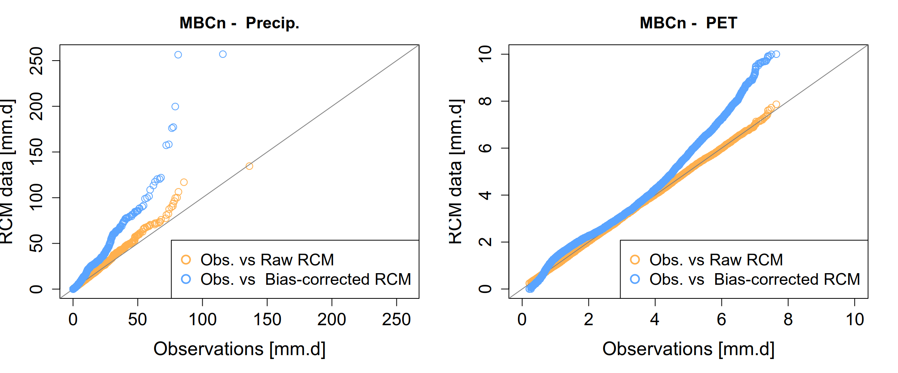
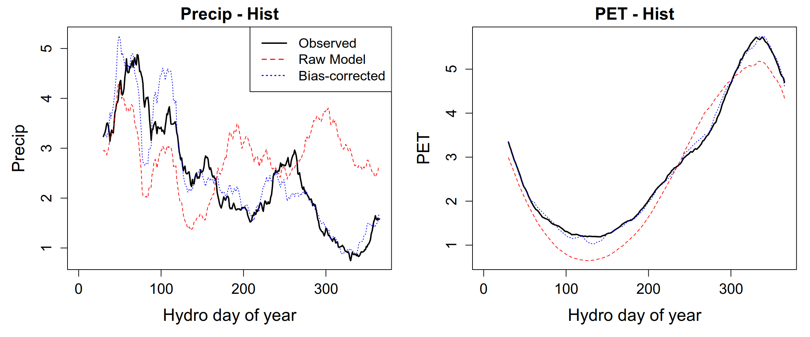
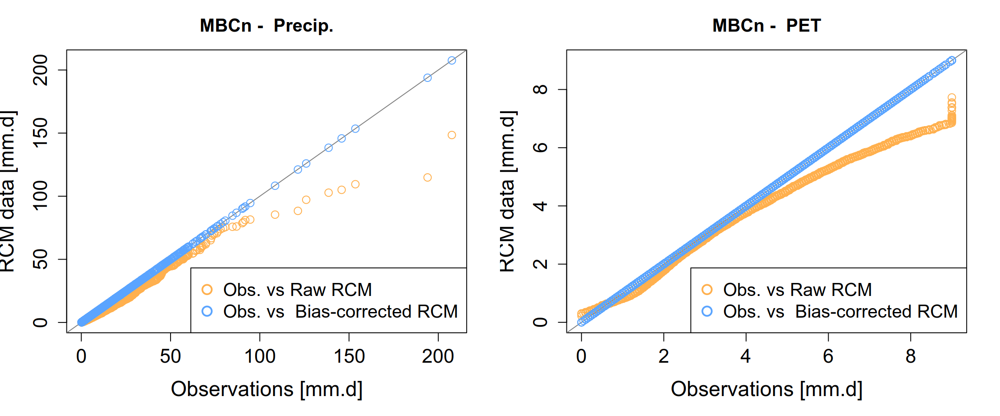
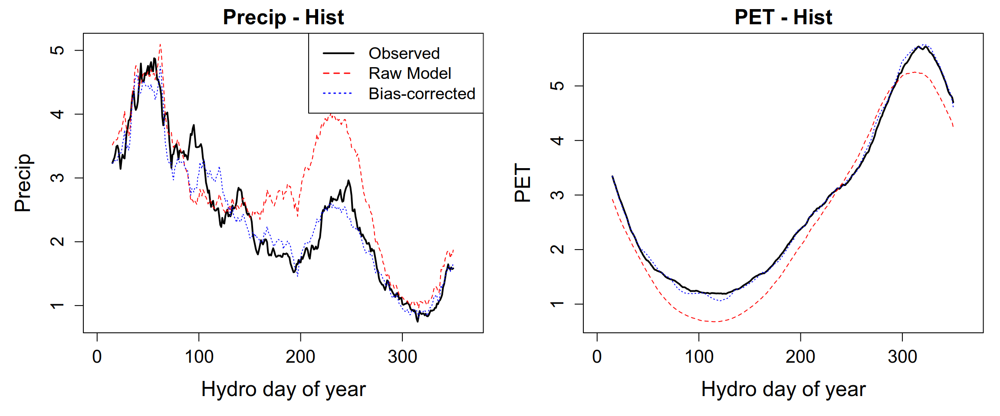

library(zoo)
library(MBC)
library(dplyr)
library(lubridate)
library(EnvStats)Bias correction of climate models
1 Load necessary libraries
2 Load preprocessed data
As described in the database section, preprocessed datasets can be efficiently reloaded using the readRDS() function. In the code chunk below, we reload the observational and climate projection dataset that was previously prepared and exported. The structure of the R objects is fully preserved: the observed data are stored in a dataframe, while the climate projection data are organized as a nested list, ensuring seamless reuse in subsequent analyses.
hist_obs = readRDS("output_preprocessed/processed_obsdata_lez.rds")
names(hist_obs) = c("Date", "PR", "T", "PET", "Q")
head(hist_obs) Date PR T PET Q
1 1977-01-01 2.85 6.8425 0.75 14.561798
2 1977-01-02 0.00 4.6035 0.90 11.649438
3 1977-01-03 0.00 3.3415 1.55 7.766292
4 1977-01-04 1.70 2.9455 2.25 5.824719
5 1977-01-05 6.40 3.9835 1.00 4.853933
6 1977-01-06 5.95 4.8015 0.70 3.994787Although data have been prepared and stored for three climate models, only the CNRM model is used here for demonstration purposes. Readers interested in further exploration may test the other models as an optional exercise.m_proj = readRDS(“output_preprocessed/processed_climatedata_lez.rds”) climdataCNRM = clim_proj[[“climdataCNRM”]]
lapply(climdataCNRM, function(df) head(df, 5))
clim_proj = readRDS("output_preprocessed/processed_climatedata_lez.rds")
climdataCNRM = clim_proj[["climdataCNRM"]]
lapply(climdataCNRM, function(df) head(df, 5))$hist
Date PR TMAX TMIN
1 1977-01-01 0 6.4188 -4.5737
2 1977-01-02 0 6.5757 -4.8144
3 1977-01-03 0 7.9662 -2.2713
4 1977-01-04 0 6.7198 -3.4396
5 1977-01-05 0 7.9568 -3.7383
$rcp45
Date PR TMAX TMIN
1 2070-01-01 0.0000000 2.5586 -6.2192
2 2070-01-02 1.1682000 4.4052 -2.5317
3 2070-01-03 0.0019633 9.8453 -1.0744
4 2070-01-04 0.1963200 8.2983 -1.3186
5 2070-01-05 3.1049000 4.6736 -2.7440
$rcp85
Date PR TMAX TMIN
1 2070-01-01 0.290380 10.0550 1.87530
2 2070-01-02 3.892100 9.8889 0.77607
3 2070-01-03 0.623500 12.8670 5.34700
4 2070-01-04 0.000000 15.0420 4.20750
5 2070-01-05 0.080232 15.0380 1.703603 Calculate potential evapotranspiration (PET)
Before applying bias correction, we first compute the PET from the climate model data. We will use the Hargreaves and Samani equation (Hargreaves & Samani, 1985), a widely adopted temperature-based method that estimates PET from daily temperature extremes and extraterrestrial radiation. Calculating PET at this stage ensures that both precipitation and evapotranspiration are consistently represented, which is essential for subsequent hydrological modelling and bias-correction procedures. To simplify the process, we have provided a ready-to-use function named calc_hargreaves(...) available in the helper functions folder of this practical’s repository. The chunk below source this function:
github_repo = paste0("https://raw.githubusercontent.com/",
"diopBachir/tp_modhydroclimat/main/")
source(file.path(github_repo, "helper_functions/calc_hargreaves.R"))# Apply the calc_hargreaves() function to the 'hist', 'rcp45', and 'rcp85'
climdataCNRM = lapply(climdataCNRM,
function(df)
{
df$PET = calc_hargreaves(df, lat = 44.1958)
df[, c("Date", "PR", "PET")]
})
lapply(climdataCNRM, function(df) head(df, 5))$hist
Date PR PET
1 1977-01-01 0 0.6549132
2 1977-01-02 0 0.6684382
3 1977-01-03 0 0.7041511
4 1977-01-04 0 0.6641879
5 1977-01-05 0 0.7342219
$rcp45
Date PR PET
1 2070-01-01 0.0000000 0.4991833
2 2070-01-02 1.1682000 0.5232178
3 2070-01-03 0.0019633 0.7814048
4 2070-01-04 0.1963200 0.7076990
5 2070-01-05 3.1049000 0.5511199
$rcp85
Date PR PET
1 2070-01-01 0.290380 0.7171000
2 2070-01-02 3.892100 0.7403796
3 2070-01-03 0.623500 0.7864600
4 2070-01-04 0.000000 0.9676216
5 2070-01-05 0.080232 1.03056214 Bias correction of climate model data
Bias-correction techniques are commonly applied to reduce systematic discrepancies between climate model simulations and observations, thereby making climate projections suitable for hydrological applications. A wide range of methods has been developed to correct biases in climate variables simulated by climate models. In this practical, we will apply the MBC method. The Multivariate Bias Correction is designed to calibrate and apply multivariate bias-correction algorithms to climate model simulations involving multiple climate variables simultaneously (Cannon et al., 2015; Cannon, 2016, 2018).
Both MBC and CDF-t aim to reduce biases in climate model outputs, but they differ in scope and complexity. MBC handles multiple variables simultaneously, accounting for inter-variable correlations, whereas CDF-t focuses on single-variable distributions, making it simpler but limited to univariate correction. In practice, the choice of method depends on the variables of interest and the need to preserve multivariate dependence structures in impact studies.
4.1 Applying the MBCn algorithm
We will use the MBCn (N-dimensional Multivariate Bias Correction) algorithm, from the MBC package, to perform bias correction. The MBCn method is based on a probability density function transformation, making it a powerful approach for correcting biases in climate model outputs (see Cannon (2018) for methodological details).
Unlike traditional univariate bias-correction methods that adjust each variable independently, MBCn corrects multiple variables simultaneously, such as precipitation and potential evapotranspiration (PET), while explicitly preserving their multivariate dependence structure. This property is particularly important for hydrological modelling, where interactions between climate variables directly influence soil moisture dynamics, evapotranspiration, and runoff generation.
4.1.1 Accounting for seasonality
To properly account for seasonality, the bias-correction procedure is applied separately for each calendar month. The data are first split into monthly subsets (e.g., all Januaries together, all Februaries together, and so on). The MBCn algorithm is then applied independently to each monthly “slice”, after which the corrected data are recombined into continuous time series.
This seasonal stratification ensures that statistical relationships learned for summer rainfall are not inadvertently applied to winter precipitation, thereby improving the physical consistency and reliability of the bias-corrected climate variables.
4.1.2 Apply bias correction
The helper function seasonalMBCn(...) defined in the chunk below provides a clean wrapper around the MBCn() routine. It automatically extracts date components, applies the multivariate bias correction to historical and future simulations, and returns bias-corrected datasets that are ready for subsequent hydrological modelling.
Show the code
# @param obs: Data frame/matrix of historical observations
# @param mod_hist: Data frame/matrix of historical model outputs
# @param mod_proj: Data frame/matrix of future model projections (RCP)#| code-fold: true
#| code-summary:
# @param var_names: Vector of column names to process
seasonalMBCn = function(obs,
mod_hist,
mod_proj,
var_names = c("PR", "PET"))
{
# helper function to add date parts
add_date_parts = function(df)
{
df$Year = as.numeric(format(df$Date, "%Y"))
df$Month = as.numeric(format(df$Date, "%m"))
df$Day = as.numeric(format(df$Date, "%d"))
df
}
# add date parts
obs = add_date_parts(obs)
mod_hist = add_date_parts(mod_hist)
mod_proj = add_date_parts(mod_proj)
# Lists to store the corrected chunks for each month
hist_list = list()
proj_list = list()
# Loop through each month (1 = Jan, ..., 12 = Dec)
for (m in 1:12) {
# Subset data for the current month
s_obs = obs[obs$Month == m, ]
s_hist = mod_hist[mod_hist$Month == m, ]
s_proj = mod_proj[mod_proj$Month == m, ]
# 2. Convert to matrices for MBCn
m_obs = as.matrix(s_obs[, var_names])
m_hist = as.matrix(s_hist[, var_names])
m_proj = as.matrix(s_proj[, var_names])
# Run MBCn
capture.output({ # stop the MBCn from printing the iteration progress
fit = MBCn(
o.c = m_obs,
m.c = m_hist,
m.p = m_proj,
iter = 100,
ratio.seq = c(TRUE, TRUE),
trace = .01
)
})
# Prepare Adjusted Chunks
s_hist_adj = as.data.frame(fit$mhat.c)
colnames(s_hist_adj) = paste0(var_names, "_adj")
hist_list[[m]] = cbind(s_hist, s_hist_adj)
# Projection
s_proj_adj = as.data.frame(fit$mhat.p)
colnames(s_proj_adj) = paste0(var_names, "_adj")
proj_list[[m]] = cbind(s_proj, s_proj_adj)
}
# Recombine all months and restore chronological order
# We use do.call(rbind, ...) to stack the 12 data frames
final_hist = do.call(rbind, hist_list)
final_proj = do.call(rbind, proj_list)
# Sort by Year, Month and Dayto keep time series linear
final_hist = final_hist[
order(final_hist$Year, final_hist$Month, final_hist$Day),
][,c("Date", "PR", "PR_adj", "PET", "PET_adj")]
final_proj = final_proj[
order(final_proj$Year, final_proj$Month, final_proj$Day),
][,c("Date", "PR", "PR_adj", "PET", "PET_adj")]
list(hist = final_hist, proj = final_proj)
}# correct RCP45
MBCnSeasonalRCP45 = seasonalMBCn(hist_obs,
climdataCNRM[["hist"]],
climdataCNRM[["rcp45"]])
# correct RCP85
MBCnSeasonalRCP85 = seasonalMBCn(hist_obs,
climdataCNRM[["hist"]],
climdataCNRM[["rcp85"]])
# extract bias corrected data
histCNRM_MBCn_adj = MBCnSeasonalRCP45[['hist']]
rcp45CNRM_MBCn_adj = MBCnSeasonalRCP45[['proj']]
rcp85CNRM_MBCn_adj = MBCnSeasonalRCP85[['proj']]4.1.3 Visualizing bias correction results
To visualize the bias correction results, we plot the the Empirical Cumulative Distribution Functions (ECDFs) to validate the effectiveness of the MBCn algorithm.
Show the code
# variale.s to plot
vars = c("PR", "PET")
# plot layout
par(mfrow = c(1, 2), mar = c(5, 4, 3, 2))
for (v in vars) {
adj_v = paste0(v, "_adj")
obs = na.omit(hist_obs[[v]])
raw = na.omit(histCNRM_MBCn_adj[[v]])
adj = na.omit(histCNRM_MBCn_adj[[adj_v]])
if (v == "PR") {
obs = obs[obs > 0.1]
raw = raw[raw > 0.1]
adj = adj[adj > 0.1]
}
lims = range(c(obs, raw, adj))
qqPlot(x = obs, y = raw,
plot.type = "Q-Q",
qq.line.type = "0-1",
add.line = TRUE,
points.col = "#ffb04e",
line.col = "gray50",
cex = 1.2,
pch = 1,
cex.main = 1.3,
cex.lab = 1.5,
cex.axis = 1.4,
xlim = lims, ylim = lims,
main = paste("MBCn - ", ifelse(v=="PR", "Precip.", "PET")),
xlab = "Observations [mm.d]",
ylab = "RCM data [mm.d]")
coords_adj = qqPlot(x = obs, y = adj, plot.it = FALSE)
points(coords_adj$x, coords_adj$y,
col = "#5aa4ff",
pch = 1, cex = 1.2)
legend("topleft",
legend = c("Obs. vs Raw RCM", "Obs. vs Bias-corrected RCM"),
col = c("#ffb04e", "#5aa4ff"),
pch = 1,
bty = "o",
cex = 1.3,
pt.lwd = 2,
pt.cex = 1.5)
}
To better understand the seasonal patterns of precipitation and potential evapotranspiration, we compute the mean daily cycle over all years. Unlike a standard calendar year, we align the daily cycle with the hydrological year, starting on September 1st. This allows us to capture the seasonal dynamics of wet and dry periods consistently. To reduce day-to-day variability and highlight the underlying seasonal signal, the resulting daily series are further smoothed using a centered 30-day rolling mean before visualization.
Show the code
# Helper: compute hydrological day of year (1 = 1 Sept)
hydro_doy = function(dates)
{
# Shift the year so that 1 Sept = day 1
doy = yday(dates - months(8))
return(doy)
}
# Daily climatology based on hydrological year
daily_climatology_hydro = function(df, vars = c("PR_adj", "PET_adj"))
{
df %>%
mutate(HydroDOY = hydro_doy(Date)) %>%
group_by(HydroDOY) %>%
summarise(across(all_of(vars), ~mean(.x, na.rm = TRUE))) %>%
ungroup()
}
rollm = function(x) rollmean(x, k = 30, fill = NA, align = "right")
par(mfcol = c(1,2), mar = c(5, 5, 2, 1))
# scenarios = c("Hist", "RCP4.5", "RCP8.5")
scenarios = "Hist"
vars = c("PR", "PET")
cols = c("black", "red", "blue") # Observed, Raw, Bias-corrected
raw_list = list(
"Hist" = histCNRM_MBCn_adj
# "RCP4.5" = rcp45CNRM_MBCn_adj,
# "RCP8.5" = rcp85CNRM_MBCn_adj
)
obs_list = list(
"Hist" = hist_obs
# "RCP4.5" = hist_obs,
# "RCP8.5" = hist_obs
)
for(v in vars) {
for(scn in scenarios) {
# Observed, Raw, Bias-corrected
obs_val = daily_climatology_hydro(obs_list[[scn]], vars = v)[[v]]
raw_val = daily_climatology_hydro(raw_list[[scn]], vars = v)[[v]]
adj_val = daily_climatology_hydro(raw_list[[scn]], vars = paste0(v, "_adj"))[[paste0(v, "_adj")]]
# Apply rolling mean
obs_val = rollm(obs_val)
raw_val = rollm(raw_val)
adj_val = rollm(adj_val)
# Axis limits
x_lim = c(1, 365)
y_lim = range(c(obs_val, raw_val, adj_val), na.rm = TRUE)
# Plot panel
plot(1:365, obs_val, type="l", lwd=2, col=cols[1], ylim=y_lim,
xlab="Hydro day of year",
ylab=ifelse(v=="PR", "Precip", "PET"),
main=paste(ifelse(v=="PR", "Precip", "PET"), "-", scn),
cex.lab = 1.5, # axis labels
cex.axis = 1.3, # axis numbers
cex.main = 1.5)
lines(1:365, raw_val, col=cols[2], lwd=1, lty=2)
lines(1:365, adj_val, col=cols[3], lwd=1, lty=3)
# Legend only for top-left panel (PR-Hist)
if(v == "PR" && scn == "Hist") {
legend("topright", legend=c("Observed", "Raw Model", "Bias-corrected"),
col=cols, lwd=c(2,1.5,1.5), lty=c(1,2,3), bty="o", cex=1.2)
}
}
}
As in the previous sections, the bias-corrected climate datasets are saved using the saveRDS() function. This approach preserves the internal structure of the R objects (lists and data frames) and facilitates efficient reloading and reuse in subsequent processing steps.
# Create an output directory if it doesn't exist
if (!dir.exists("output_biascorrection")) dir.create("output_biascorrection")
# Save the bias-corrected climate data while preserving object structure
saveRDS(list("histCNRM_adj" = histCNRM_MBCn_adj,
"rcp45CNRM_adj" = rcp45CNRM_MBCn_adj,
"rcp85CNRM_adj" = rcp85CNRM_MBCn_adj),
file="output_biascorrection/biascorrectedCNRM-MBCn.rds")4.2 Exercise
Now that we have successfully bias-corrected the CNRM dataset, it is time to apply the same rigor to the second Regional Climate Model (RCM) in our database : the SMHI-MPI model.
Hint: load data
clim_proj = readRDS("output_preprocessed/processed_climatedata_lez.rds")
climdata_SMHI_MPI = clim_proj[["climdataSHMI_MPI"]]
# lapply(climdata_SMHI_MPI, function(df) head(df, 5))
Hint: Calculate potential evapotranspiration (PET)
# Apply the calc_hargreaves() function to the 'hist', 'rcp45', and 'rcp85'
climdata_SMHI_MPI = lapply(climdata_SMHI_MPI,
function(df)
{
df$PET = calc_hargreaves(df, lat = 44.1958)
df[, c("Date", "PR", "PET")]
})
# lapply(climdata_SMHI_MPI, function(df) head(df, 5))With the SMHI-MPI projections loaded and the PET calculated, below are your tasks:
Execute the Correction: Run the
seasonalMBCn(...)function across your variable matrix (Precipitation and PET).Validation: Use the provided visualization suite to generate comparative plots.
Analysis: Observe how the distribution of the corrected SMHI-MPI data aligns with the reference observations compared to the raw model output.
Save results: save the bias-corrected data to
output_biascorrection/biascorrectedSMHI-MPI.rds.
Hint: Target benchmarks
Once the seasonalMBCn function has finished processing, your output visualizations should demonstrate the effectiveness of the correction. Specifically, you are looking for the “collapse” of the model’s systematic errors toward the historical observation baseline.


5 What bias correction does NOT do
The days used in climate models often do not correspond exactly to the calendar days of the real world. This is not an error, but rather a deliberate mathematical simplification that makes the extensive computations required for climate projections more manageable. As a result, different climate models use different calendars, relying on specialized calendars, such as the 360-day calendar or the 365-day (no-leap) calendar. Only a few climate models follow the standard (Gregorian) calendar, with 365 days in non-leap years and 366 days in leap years. Therefore, as done with the data used in this practical, it is recommended to convert climate model output to a standard Gregorian calendar before applying bias correction.
6 References
Cannon, A. J. (2016). Multivariate bias correction of climate model output: Matching marginal distributons and inter-variable dependence structure. Journal of Climate, 29, 7045–7064. https://doi.org/10.1175/JCLI-D-15-0679.1
Cannon, A. J. (2018). Multivariate quantile mapping bias correction: An n-dimensional probability density function transform for climate model simulations of multiple variables. Climate Dynamics, 50(1-2), 31–49. https://doi.org/10.1007/s00382-017-3580-6
Cannon, A. J., Sobie, S. R., & Murdock, T. Q. (2015). Bias correction of GCM precipitation by quantile mapping: How well do methods preserve changes in quantiles and extremes? Journal of Climate, 28, 6938–6959. https://doi.org/10.1175/JCLI-D-14-00754.1
Hargreaves, G. H., & Samani, Z. A. (1985). Reference crop evapotranspiration from temperature. Applied Engineering in Agriculture, 1(2), 96–99. https://doi.org/10.13031/2013.26773